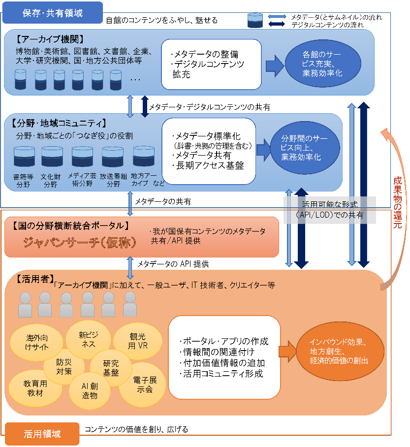

-
- 構成
- イノベーション創出
- I-3グローバル市場をリードする知財・標準化戦略の一体的推進
- ・総合的な知財マネジメントの推進（知財に加えデータ・標準等）
- ・国立研究開発法人を活用した業種横断的な標準化の推進、人材育成
- I-2 知財システム基盤の整備
- ・証拠収集手続の強化
- ・ＡＤＲ制度（標準必須特許裁定）の創設
- I-1 データ、人工知能の利活用促進による産業競争力強化に向けた知財制度の構築
- ・データ利用の契約ガイドラインの策定
- ・不正競争防止法改正（データの不正取得等の禁止等）
- ・著作権法改正（柔軟性のある権利制限規定の整備）
- ・ＡＩ学習済モデルの特許化の具体的要件や保護範囲の検討
- Ｉ第４次産業革命（Society5.0）の基盤となる知財システムの構築
- 地方創生
- II-2地方・中小企業による知財活用と産学・産産連携の推進
- ・中小企業への知財意識の普及啓発、知財を活用した海外展開支援
- ・産学連携の橋渡し・事業化支援
- II-1 「攻め」の農林水産業・食料産業等を支える知財活用・強化
- ・地理的表示(GI)や植物品種の国内外での保護、相談体制の充実
- ・我が国農林水産物の強みをアピールするJAS規格の制定
- ・データ等を活用したスマート農業の推進
- II-3 「国民一人ひとりが知財人材」を目指した知財教育・知財人材育成の推進
- ・新学習指導要領における知財教育の充実
- ・「知財創造教育推進コンソーシアム」によるカリキュラム・教材開発
- ・「地域コンソーシアム」構築
- ＩＩ知財の潜在力を活用した地方創生とイノベーション推進
- 文化創造
- III-1 コンテンツの海外展開促進と産業基盤の強化
- ・「クールジャパン官民連携プラットフォーム」、地方版クールジャパン会議と拠点構築・相互連携
- ・コンテンツ分野の人材育成・教育機関との連携
- III-2 映画産業の振興
- ・制作支援強化や資金調達の多様化による中小制作会社等の海外展開促進
- ・ロケ撮影の環境改善に係る官民連絡会議
- III-3 デジタルアーカイブの構築
- ・国として分野横断統合ポータルを構築し、産学官連携の下、研究・ビジネス・インバウンド等に活用
- ＩＩＩ２０２０年とその先の日本を輝かせるコンテンツ力の強化
- 本文
- はじめに
- I．第４次産業革命（Society5.0）の基盤となる知財システムの構築
- １．データ・人工知能（AI）の利活用促進による産業競争力強化に向けた知財制度の構築
- （１）現状と課題
- （２）今後取り組むべき施策
- ２．知財システム基盤の整備
- （１）現状と課題
- （２）今後取り組むべき施策
- ３．グローバル市場をリードする知財・標準化戦略の一体的推進
- （１）現状と課題
- （２）今後取り組むべき施策
- II．知財の潜在力を活用した地方創生とイノベーション推進
- １．攻めの農林水産業・食料産業等を支える知財活用・強化
- （１）現状と課題
- （２）今後取り組むべき施策
- ２．地方・中小企業による知財活用と産学・産産連携の推進
- （１）現状と課題
- （２）今後取り組むべき施策
- ３．「国民一人ひとりが知財人材」を目指した知財教育・知財人材育成の推進
- （１）現状と課題
- （２）今後取り組むべき施策
- Ⅲ．2020 年とその先の日本を輝かせるコンテンツ力の強化
- １．コンテンツの海外展開促進と産業基盤の強化
- （１）現状と課題
- （２）今後取り組むべき施策
- ２．映画産業の振興
- （１）現状と課題
- （２）今後取り組むべき施策
- ３．デジタルアーカイブの構築
- （１）現状と課題
- 
- （２）今後取り組むべき施策
- 我が国における分野横断型統合ポータル構築に向けたアーカイブ間の連携と利活用を促進するため、関係府省において以下の取組を推進することとする。
- ①アーカイブ間連携と利活用の促進
- （産学官でのデジタルアーカイブのフォーラムの開催）
- （デジタルアーカイブ推進のための工程表の作成）
- （国の統合ポータルの構築）
- （国の各アーカイブ機関におけるガイドラインの順守）
- （利活用の推進のための連携）
- （地方におけるアーカイブ連携の促進）
- ②分野ごとの取組の促進
- （分野ごとのつなぎ役による取組と支援）
- （分野横断の取組）
- （書籍等分野）
- （文化財分野）
- （メディア芸術等分野）
- （放送コンテンツ分野）
- ③アーカイブ利活用に向けた基盤整備
- （オープン化の促進）
- （アーカイブの構築と利活用の促進のための著作権制度の整備）
- （利活用の促進のための周辺環境の整備）
- （アーカイブ関連人材の育成）